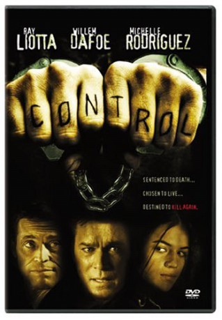

#6620 Control - Du sollst nicht töten
Alternativ: Control
 
 IMDB-Wertung: 6.2 / 10
IMDB-Wertung: 6.2 / 10  Metascore: 0
Metascore: 0 
Lee Ray Oliver grew up from abused kid to sociopath, inevitably condemned to death, but wakes up in the morgue after the 'lethal' injection. Dr. Michael Copeland offers him a choice: the real killer drug or 'volunteering' as life-long test person for his pharmaceutic experiment, Anagress, meant to suppress violent tendencies but side-effects unknown. After vicious escape attempts, Lee Ray finally develops genuine remorse and tries to make-up with Gary Caputo, who Lee shot in the head, leaving him mentally a child. Brother Bill Caputo's hate for ruining both of their lives is however redoubled, with tragic consequences.
Jahr: 2004
Dauer: 101 Minuten
FSK: 16
Land: Aruba Studio: Kinowelt Home EntertainmentTonspuren:
Untertitel:
Auflösung: 1080p (1920x1040) Größe: 8755 MB
Genre: Thriller, Sci-Fi, Krimi
Regisseur: Tim Hunter
Drehbuch: Todd Slavkin
Soundtrack: Louis Febre
Darsteller:
 Ray Liotta als Lee Ray Oliver
Ray Liotta als Lee Ray Oliver Willem Dafoe als Dr. Michael Copeland
Willem Dafoe als Dr. Michael Copeland Michelle Rodriguez als Teresa
Michelle Rodriguez als Teresa Stephen Rea als Dr. Arlo Penner
Stephen Rea als Dr. Arlo Penner Polly Walker als Barbara Copeland
Polly Walker als Barbara Copeland Kathleen Robertson als Eden Ross
Kathleen Robertson als Eden Ross- Tim DeKay als Bill Caputo
- Stewart Alexander als Powell
 Glenn Wrage als Gibson
Glenn Wrage als Gibson Ivan Kaye als Norton
Ivan Kaye als Norton Mac McDonald als Warden
Mac McDonald als Warden- Mark Colleano als Skippy
 Nick Brimble als Dimi Vertov
Nick Brimble als Dimi Vertov- Maxim Genchev als Prison Doctor
 Eric Meyers als Store Manager
Eric Meyers als Store Manager- Mark Pickard als Gary Caputo
- Mark Letheren als Villard
- Anthony Warren als Brock
 Raicho Vasilev als Vlas
Raicho Vasilev als Vlas- Leroy Golding als Ralph
- John Hansson als Pete
- Chico Andrade als Gruff Man
- Daniel Samuel als Kid
- Jonas Talkington als Pharmacist
- Boyan Kuzov als Lee Ray - Age 4
- Peter Petrov als Lee Ray - Age 10
- Victor Krasimirov als Lee Ray - Age 16
- Linda Russeva als Lee Ray's Mother
 Dobrin Dosev als Manager II
Dobrin Dosev als Manager II- Plamen Manassiev als Nicky
- Joel Clark Ackerman als Helicopter Pilot
Datei: X:\2004(A-F)\Control - Du sollst nicht töten (2004, FSK16, 1920x1040).mkv seit 25.07.2017
Festplatte: HD 2003-2004-2005(A-F)
 Es gibt insgesamt 39 Filme in der Gruppe '2004(A-F)'
Es gibt insgesamt 39 Filme in der Gruppe '2004(A-F)'